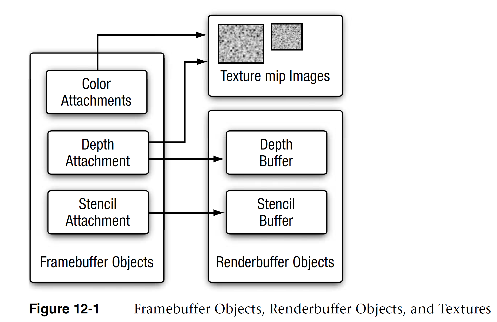

GLES Framebuffers
更多用例:
多渲染目标(Multiple Render Targets) 与 延迟着色法
定义
通常我们的操作都是在 默认帧缓冲 (Default Framebuffer ) 的渲染缓冲上进行的。默认的帧缓冲是在你创建窗口的时候生成和配置的（EGL）。
在GL中会使用几种不同类型的屏幕缓冲：用于写入颜色值的颜色缓冲，用于写入深度信息的深度缓冲，以及允许我们基于一些条件丢弃指定片段的模板缓冲。把这几种缓冲结合起来叫做帧缓冲(Framebuffer)。
而使用 帧缓冲对象 (Framebuffer Object) 允许用户自定义帧缓冲，Framebuffer 实际是一个可添加缓冲的容器.
用户可以为其添加纹理 (Textures ) 或 渲染缓冲区 对象（Renderbuffer), 来定义自己的颜色缓冲，深度缓冲, 和模板缓冲。
应用
渲染到一个非默认的帧缓冲被叫做离屏渲染(Off-screen Rendering) 或 渲染到纹理 (Render to Texture)。
通过自定义帧缓冲可以将你的场景渲染到一个不同的帧缓冲中, 可以使我们能够在当前场景中创建镜子, 倒影这样的效果. 还有很多常见特效需要用到帧缓冲,
- 例如: 阴影贴图, 动态反射和环境贴图, 多道景深技术, 动态模糊, 和后期处理特效等.
相关定义
- 默认帧缓冲 Default Framebuffers
- 在进行GLES指令操作前, 需要创建一个 Context 和 绘图表面 (默认 Framebuffer), 这通常由原生窗口系统通过 EGL 等完成.
- 创建 EGL 绘制表面的调用时, 以像素形式指定 宽度,高度, 是否使用 颜色缓冲, 深度缓冲, 模板缓冲, 及这些缓冲区的位深.
- 不能对其进行修改或查询状态操作
glViewport控制帧缓冲的大小, 以及控制阴影深度贴图大小等等- 帧缓冲对象 Framebuffers Objects (FBOs)
- 附着 Attachment
- FBO 仅被视为缓存的容器, 因此使用 FBO 作为渲染目标时，首先需要为 FBO 的附着连接对象，
- 附着是一个内存位置，它能够作为帧缓冲的一个缓冲，可以将它想象为一个图像。
- 创建一个附件方式有两种：纹理或渲染缓冲对象(Renderbuffer)。
- 帧缓冲的3个附着
- 颜色附着 Color Attachment
- 深度附着 Depth Attachment
- 模板附着 Stencil Attachment
- 纹理附件 Textures
- 即普通的 Texture, 根据 Format的不同, 可以分别用作 FBO 中的颜色、深度或者模板附着。
- 渲染缓冲对象 Renderbuffer Objects
- 是一个由应用程序分配的 2D 图像缓冲区。
- 渲染缓冲区可以用于分配和存储 颜色、深度或者模板值，可以用作 FBO 中的颜色、深度或者模板附着。
使用 纹理 和 Renderbuffer 对象, 都支持为 FBO 分别添加三种附着. 但通常使用 Texture 添加颜色附着, 用 Renderbuffer 来添加深度和模板附着. 原因在后面讨论.

(OpenGL ES 3.0 编程指南)
使用流程
APP –> GLES : glGenFramebuffers(1, &fbo);
glBindFramebuffer(GL_FRAMEBUFFER, fbo);
glBindFramebuffer(GL_FRAMEBUFFER, 0);
创建帧缓冲
- 创建一个帧缓冲对象
glGenFramebuffers(1, &fbo);
- 绑定为激活的(Active)帧缓冲
glBindFramebuffer(GL_FRAMEBUFFER, fbo);
在绑定到GL_FRAMEBUFFER目标之后，所有的读取和写入帧缓冲的操作将会影响当前绑定的帧缓冲。
- 我们也可以使用
GL_READ_FRAMEBUFFER或GL_DRAW_FRAMEBUFFER，将一个帧缓冲分别绑定到读取目标或写入目标。 - 绑定到
GL_READ_FRAMEBUFFER的帧缓冲将会使用在所有像是glReadPixels的读取操作中， - 绑定到
GL_DRAW_FRAMEBUFFER的帧缓冲将会被用作渲染、清除等写入操作的目标。 - 通常都不需要区分它们，使用
GL_FRAMEBUFFER，绑定到两个上。
添加附着: 在这一阶段, 使用Texture或Renderbuffer对FBO添加附着, 代码在下两节种展示.
- 添加附着后, 检查帧缓冲的完整性
if( glCheckFramebufferStatus(GL_FRAMEBUFFER) == GL_FRAMEBUFFER_COMPLETE)
一个完整的帧缓冲需要满足以下的条件：
- 附加至少一个附着（颜色、深度或模板附着）。
- 至少有一个颜色附件(Attachment)。TODO: check angle
- 所有的附件都必须是完整的（保留了内存）。
- 每个缓冲都应该有相同的高度和宽度。
- 如果存在深度和模板附着, 它们必须是相同的图像.
- 所有附着的 GL_RENDERBUFFER_SAMPLES 样本值相同. 若附着对象是纹理, 则此值为0.
- 解绑FBO / 激活默认帧缓冲
glBindFramebuffer(GL_FRAMEBUFFER, 0);
渲染到一个不同的帧缓冲被叫做离屏渲染(Off-screen Rendering)。要保证所有的渲染操作在主窗口中有视觉效果，我们需要再次激活默认帧缓冲，将它绑定到0。
纹理附着
- 普通的创建纹理的方式
unsigned int texture;
glGenTextures(1, &texture);
glBindTexture(GL_TEXTURE_2D, texture);
glTexImage2D(GL_TEXTURE_2D, 0, GL_RGB, 800, 600, 0, GL_RGB, GL_UNSIGNED_BYTE, NULL);
glTexParameteri(GL_TEXTURE_2D, GL_TEXTURE_MIN_FILTER, GL_LINEAR);
glTexParameteri(GL_TEXTURE_2D, GL_TEXTURE_MAG_FILTER, GL_LINEAR);
如果你想将你的屏幕渲染到一个更小或更大的纹理上，你需要（在渲染到你的帧缓冲之前）再次调用glViewport，使用纹理的新维度作为参数，否则只有一小部分的纹理或屏幕会被渲染到这个纹理上。
TODO: 什么意思?
- 将纹理附加在帧缓冲上
glFramebufferTexture2D(GL_FRAMEBUFFER, GL_COLOR_ATTACHMENT0, GL_TEXTURE_2D, texture, 0);
target：帧缓冲的目标（绘制、读取或者两者皆有）attachment：我们想要附加的附件类型。当前我们正在附加一个颜色附件。注意最后的0意味着可以附加多个颜色附件。GL_COLOR_ATTACHMENTi,GL_DEPTH_ATTACHMENT,GL_STENCIL_ATTACHMENTorGL_DEPTH_STENCIL_ATTACHMENT.textarget：你希望附加的纹理类型texture：要附加的纹理本身level：多级渐远纹理的级别。我们将它保留为0
-
纹理对象允许附加一个深度或模板缓冲纹理到帧缓冲对象中。
-
要附加深度缓冲的话，将附件类型
attachment设置为GL_DEPTH_ATTACHMENT。并将纹理的格式(Format)和内部格式(Internalformat)类型变为GL_DEPTH_COMPONENT，来反映深度缓冲的储存格式。 -
要附加模板缓冲的话，将附件类型
attachment设置为GL_STENCIL_ATTACHMENT，并将纹理的格式设定为GL_STENCIL_INDEX。 -
也可以将深度缓冲和模板缓冲合并附加为一个纹理。纹理的每32位数值将包含24位的深度信息和8位的模板信息。将附件类型
attachment设置GL_DEPTH_STENCIL_ATTACHMENT类型，并配置纹理的格式，让它包含合并的深度和模板值。 -
```
glTexImage2D(
GL_TEXTURE_2D, 0, GL_DEPTH24_STENCIL8, 800, 600, 0,
GL_DEPTH_STENCIL, GL_UNSIGNED_INT_24_8, NULL
);glFramebufferTexture2D(GL_FRAMEBUFFER, GL_DEPTH_STENCIL_ATTACHMENT, GL_TEXTURE_2D, texture, 0);
```
Renderbuffer 附着
- 创建一个渲染缓冲对象的代码
glGenRenderbuffers(1, &rbo);
- 绑定这个渲染缓冲对象，让之后所有的渲染缓冲操作影响当前的 RBO：
glBindRenderbuffer(GL_RENDERBUFFER, rbo);
- 创建一个深度和模板渲染缓冲对象
glRenderbufferStorage(GL_RENDERBUFFER, GL_DEPTH24_STENCIL8, 800, 600);
创建一个渲染缓冲对象和纹理对象类似，不同的是这个对象是专门被设计作为图像使用的，而不是纹理那样的通用数据缓冲(General Purpose Data Buffer)。
这里我们选择GL_DEPTH24_STENCIL8作为内部格式，它封装了24位的深度和8位的模板缓冲。
- 附加这个渲染缓冲对象到 FBO：
glFramebufferRenderbuffer(GL_FRAMEBUFFER, GL_DEPTH_STENCIL_ATTACHMENT, GL_RENDERBUFFER, rbo);
使用GL_DEPTH_STENCIL_ATTACHMENT表示同时包含深度和模板附着
Texture VS. Renderbuffer
渲染缓冲对象(Renderbuffer Object) 是在纹理之后引入到OpenGL中，作为一个可用的帧缓冲附件类型的，所以在过去纹理是唯一可用的附件。
Renderbuffer:
-
和纹理图像一样，渲染缓冲对象是一个真正的缓冲，即一系列的字节、整数、像素等。
-
优点: Renderbuffer 会将数据储存为OpenGL原生的渲染格式，它是为离屏渲染到帧缓冲优化过的。
-
Renderbuffer 直接将所有的渲染数据储存到它的缓冲中，不会做任何针对纹理格式的转换，让它变为一个更快的可写储存介质。
-
缺点: Renderbuffer 不能做纹理: 渲染缓冲对象通常都是只写的，所以你不能读取它们, 比如使用纹理访问。
- 当然你仍然还是能够使用
glReadPixels来读取它，这会从当前绑定的帧缓冲(而不是附件本身)中返回特定区域的像素。
因此通常的规则是:
-
如果你不需要从一个缓冲中采样数据，那么对这个缓冲使用渲染缓冲对象会是明智的选择。
-
而如果你需要从缓冲中采样颜色或深度值等数据，那么你应该选择纹理附件。性能方面它不会产生非常大的影响的。
因此 Renderbuffer 对象通常用于深度和模板附件，因为大部分时间我们都不需要从深度和模板缓冲中读取值，只关心深度和模板测试, 但不需要对它们进行采样.
对应到场景中:
- 选择 Texture
- 渲染到一个用作颜色纹理的颜色缓冲区
- 渲染到一个用作阴影的深度纹理的深度缓冲区
- 选择 Renderbuffer
- 多重采样
- 如果图像不被作为纹理, 则 Renderbuffer 可能带来性能优势:
- GLES 可能以更高效的格式存储 Renderbuffer, 比纹理更适合渲染
- 例如: 利用其写入或者复制到其它缓冲快的特点。交换缓冲这样的操作在使用渲染缓冲对象时会非常快。
- 在每个渲染迭代最后使用的
glfwSwapBuffers，也可以通过渲染缓冲对象实现：只需要写入一个渲染缓冲图像，并在最后交换到另外一个渲染缓冲就可以了。
示例: 场景滤镜
创建阶段
// 创建一个帧缓冲对象，并绑定
unsigned int framebuffer;
glGenFramebuffers(1, &framebuffer);
glBindFramebuffer(GL_FRAMEBUFFER, framebuffer);
// 使用 Texture 添加颜色附着
// 生成纹理
unsigned int texColorBuffer;
glGenTextures(1, &texColorBuffer);
glBindTexture(GL_TEXTURE_2D, texColorBuffer);
glTexImage2D(GL_TEXTURE_2D, 0, GL_RGB, 800, 600, 0, GL_RGB, GL_UNSIGNED_BYTE, NULL);
glTexParameteri(GL_TEXTURE_2D, GL_TEXTURE_MIN_FILTER, GL_LINEAR );
glTexParameteri(GL_TEXTURE_2D, GL_TEXTURE_MAG_FILTER, GL_LINEAR);
glBindTexture(GL_TEXTURE_2D, 0);
// 将纹理对象, 附加到当前绑定的帧缓冲对象颜色(color)附件上
glFramebufferTexture2D(GL_FRAMEBUFFER, GL_COLOR_ATTACHMENT0, GL_TEXTURE_2D, texColorBuffer, 0);
// 使用 Renderbuffer 添加深度和模板附着
// 深度（和模板）测试
// 添加一个深度（和模板）附件到帧缓冲中
unsigned int rbo;
glGenRenderbuffers(1, &rbo);
glBindRenderbuffer(GL_RENDERBUFFER, rbo);
glRenderbufferStorage(GL_RENDERBUFFER, GL_DEPTH24_STENCIL8, 800, 600); // GL_DEPTH24_STENCIL8
glBindRenderbuffer(GL_RENDERBUFFER, 0);
// 将渲染缓冲对象, 附加到到当前绑定的帧缓冲的 depth 和 stencil 附件上
glFramebufferRenderbuffer(GL_FRAMEBUFFER, GL_DEPTH_STENCIL_ATTACHMENT, GL_RENDERBUFFER, rbo);
// 检查帧缓冲是否是完整的
if(glCheckFramebufferStatus(GL_FRAMEBUFFER) != GL_FRAMEBUFFER_COMPLETE)
std::cout << "ERROR::FRAMEBUFFER:: Framebuffer is not complete!" << std::endl;
// 解绑帧缓冲/绑定回默认
glBindFramebuffer(GL_FRAMEBUFFER, 0);
绘制阶段
要想绘制场景到一个纹理上，我们需要采取以下的步骤：
- 将新的帧缓冲绑定为激活的帧缓冲
- 和往常一样渲染场景
- 此时场景会渲染到绑定的帧缓冲, 而不是默认的帧缓冲。
- 所有的深度和模板操作都会从当前绑定的帧缓冲的深度和模板附件中（如果有的话）读取。 - 绑定回默认的帧缓冲
- 绘制一个整屏幕的四边形，然后将帧缓冲的颜色缓冲作为四边形的纹理。
// 第一处理阶段: 绘制到FBO
glBindFramebuffer(GL_FRAMEBUFFER, framebuffer);
glClearColor(0.1f, 0.1f, 0.1f, 1.0f);
glClear(GL_COLOR_BUFFER_BIT | GL_DEPTH_BUFFER_BIT); // 我们现在不使用模板缓冲
glEnable(GL_DEPTH_TEST);
DrawScene(); // 绘制原始 3D 场景 // Load VAO, bind Textures, uniform data, call glDrawArrays or glDrawElements
// 第二处理阶段: 绘制到屏幕
glBindFramebuffer(GL_FRAMEBUFFER, 0); // 返回默认
glClearColor(1.0f, 1.0f, 1.0f, 1.0f);
glClear(GL_COLOR_BUFFER_BIT);
screenShader.use(); // 使用另一套 shader
glBindVertexArray(quadVAO); // 绘制一个四边形
glDisable(GL_DEPTH_TEST);
glBindTexture(GL_TEXTURE_2D, textureColorbuffer); // 将 Color Buffer 作为纹理绘制到四边形上
glDrawArrays(GL_TRIANGLES, 0, 6);
如果screenShader不做特殊处理, 此时画面会和DrawScene绘制的原始3D场景一致. 此时绘制的四边形类似一个显示屏幕, 利用贴图显示原始场景.
但如果对 screenShader 中纹理的color进行修改, 就可用实现滤镜效果.
void main()
{
// 反白特效
FragColor = vec4(vec3(1.0 - texture(screenTexture, TexCoords)), 1.0);
}
画面效果和更多特效处理, 参见 LearnOpenGL
(English version: LearnOpenGL)
离屏MSAA
在默认帧缓冲中启用MASS, 只需要glEnable(GL_MULTISAMPLE);启用即可. 但对于离屏渲染, 需要手动创建多重采样的附着.
Texture:
- 创建MS Texture: 使用
glTexImage2DMultisample来替代glTexImage2D
glBindTexture(GL_TEXTURE_2D_MULTISAMPLE, tex);
glTexImage2DMultisample(GL_TEXTURE_2D_MULTISAMPLE, samples, GL_RGB, width, height, GL_TRUE);
glBindTexture(GL_TEXTURE_2D_MULTISAMPLE, 0);
- 附加到帧缓冲: 使用
glFramebufferTexture2D将多重采样纹理上，但这里纹理类型使用的是GL_TEXTURE_2D_MULTISAMPLE。
glFramebufferTexture2D(GL_FRAMEBUFFER, GL_COLOR_ATTACHMENT0, GL_TEXTURE_2D_MULTISAMPLE, tex, 0);
Renderbuffer:
- 创建过程不变
- 附加到帧缓冲: 将
glRenderbufferStorage的调用改为glRenderbufferStorageMultisample就可以了
glRenderbufferStorageMultisample(GL_RENDERBUFFER, 4, GL_DEPTH24_STENCIL8, width, height);
第二参数4为采样次数
绘制:
void glBlitFramebuffer (GLint srcX0, GLint srcY0, GLint srcX1, GLint srcY1, GLint dstX0, GLint dstY0, GLint dstX1, GLint dstY1, GLbitfield mask, GLenum filter);
- 将一个矩形区域的像素值, 从一个帧缓冲复制到另一个帧缓冲.
通过glBlitFramebuffer将多重采样的帧缓冲, 复制到一个中介帧缓冲的颜色附着的纹理, 实现多重采样.
glBindFramebuffer(multisampledFBO);
ClearFrameBuffer();
DrawScene();
// 将多重采样缓冲还原到中介FBO上
glBindFramebuffer(GL_READ_FRAMEBUFFER, multisampledFBO);
glBindFramebuffer(GL_DRAW_FRAMEBUFFER, intermediateFBO);
glBlitFramebuffer(0, 0, width, height, 0, 0, width, height, GL_COLOR_BUFFER_BIT, GL_NEAREST);
// 现在场景是一个2D纹理缓冲，可以将这个图像用来后期处理
glBindFramebuffer(GL_FRAMEBUFFER, 0);
ClearFramebuffer();
glBindTexture(GL_TEXTURE_2D, screenTexture);
DrawPostProcessingQuad();
Framebuffer 相关 API 汇总
| API | ES Ver. | Notes |
|---|---|---|
| void glGenFramebuffers( sizei n, uint *framebuffers ); | 2 | |
| void glBindFramebuffer( enum target, uint framebuffer ); | 2 | |
| void glGenRenderbuffers( sizei n, uint *renderbuffers ); | 2 | |
| void glBindRenderbuffer( enum target, uint renderbuffer ); | 2 | |
| void glRenderbufferStorage (GLenum target, GLenum internalformat, GLsizei width, GLsizei height); |
2 | 创建一个 Renderbuffer internalformat: 指定缓冲格式: depth 和 stencil GL_DEPTH24_STENCIL8; GL_DEPTH32F_STENCIL8 GL_DEPTH_COMPONENT16 GL_DEPTH_COMPONENT24 GL_DEPTH_COMPONENT32F GL_STENCIL_INDEX8 |
| void glRenderbufferStorageMultisample ( GLenum target, GLsizei samples, GLenum internalformat, GLsizei width, GLsizei height); |
3.0 | 创建一个多重采样 Renderbuffer, 与glRenderbufferStorage的区别仅为后者samples=0 |
| GLenum glCheckFramebufferStatus (GLenum target); | 检查fbo完整性 | |
| void glBlitFramebuffer (GLint srcX0, GLint srcY0, GLint srcX1, GLint srcY1, GLint dstX0, GLint dstY0, GLint dstX1, GLint dstY1, GLbitfield mask, GLenum filter); |
将一个矩形区域的像素值, 从一个fb复制到另一个fb. 应用举例: 1. 复制多个纹理到屏幕 2. 将多重采样渲染解析为一个纹理 |
|
| 绑定 | ||
| void glFramebufferRenderbuffer ( GLenum target, GLenum attachment, GLenum renderbuffertarget, GLuint renderbuffer); |
2 | |
| void glFramebufferTexture ( GLenum target, GLenum attachment, GLuint texture, GLint level); |
3.2 | |
| void glFramebufferTexture2D( enum target, enum attachment, enum textarget, uint texture, int level ); |
2.0 | |
| void glFramebufferTextureLayer( enum target, enum attachment, uint texture, int level, int layer ); |
3.0 | 绑定 3D Texture |
| 无效化/删除 | ||
| void glInvalidateFramebuffer (GLenum target, GLsizei numAttachments, const GLenum *attachments); |
3.0 | 通知驱动不再需要fb内容. 使驱动可用进行优化: 如跳过TBR架构中不必要的图块内容恢复 跳过实现中为改进性能而做的缓存刷新 |
| void glInvalidateSubFramebuffer (GLenum target, GLsizei numAttachments, const GLenum *attachments, GLint x, GLint y, GLsizei width, GLsizei height); |
3.0 | |
| void glDeleteRenderbuffers (GLsizei n, const GLuint *renderbuffers); |
2 | |
| void glDeleteFramebuffers (GLsizei n, const GLuint *framebuffers); |
2 | |
| 其他 | ||
| void glFramebufferParameteri (GLenum target, GLenum pname, GLint param); void glGetFramebufferParameteriv (GLenum target, GLenum pname, GLint *params); |
||
| boolean IsRenderbuffer( uint renderbuffer ); | ||
| boolean IsFramebuffer( uint framebuffer ); |
其他针对读帧缓冲的命令: ReadPixels, CopyTexImage, and CopyTexSubImage,
gl2
void glBindFramebuffer (GLenum target, GLuint framebuffer);
GLenum glCheckFramebufferStatus (GLenum target);
void glDeleteFramebuffers (GLsizei n, const GLuint framebuffers);
void glFramebufferRenderbuffer (GLenum target, GLenum attachment, GLenum renderbuffertarget, GLuint renderbuffer);
void glFramebufferTexture2D (GLenum target, GLenum attachment, GLenum textarget, GLuint texture, GLint level);
void glGenFramebuffers (GLsizei n, GLuint framebuffers);
void glGetFramebufferAttachmentParameteriv (GLenum target, GLenum attachment, GLenum pname, GLint *params);
GLboolean glIsFramebuffer (GLuint framebuffer);
void glBindRenderbuffer (GLenum target, GLuint renderbuffer);
void glDeleteRenderbuffers (GLsizei n, const GLuint renderbuffers);
void glFramebufferRenderbuffer (GLenum target, GLenum attachment, GLenum renderbuffertarget, GLuint renderbuffer);
void glGenRenderbuffers (GLsizei n, GLuint renderbuffers);
void glGetRenderbufferParameteriv (GLenum target, GLenum pname, GLint *params);
GLboolean glIsRenderbuffer (GLuint renderbuffer);
void glRenderbufferStorage (GLenum target, GLenum internalformat, GLsizei width, GLsizei height);
gl3
void glBlitFramebuffer (GLint srcX0, GLint srcY0, GLint srcX1, GLint srcY1, GLint dstX0, GLint dstY0, GLint dstX1, GLint dstY1, GLbitfield mask, GLenum filter);
void glFramebufferTextureLayer (GLenum target, GLenum attachment, GLuint texture, GLint level, GLint layer);
void glInvalidateFramebuffer (GLenum target, GLsizei numAttachments, const GLenum attachments);
void glInvalidateSubFramebuffer (GLenum target, GLsizei numAttachments, const GLenum attachments, GLint x, GLint y, GLsizei width, GLsizei height);
void glRenderbufferStorageMultisample (GLenum target, GLsizei samples, GLenum internalformat, GLsizei width, GLsizei height);
gl31
void glFramebufferParameteri (GLenum target, GLenum pname, GLint param);
void glGetFramebufferParameteriv (GLenum target, GLenum pname, GLint *params);
gl32
void glFramebufferTexture (GLenum target, GLenum attachment, GLuint texture, GLint level);
EXT
glext.h
void glResolveMultisampleFramebufferAPPLE (void);
void glDiscardFramebufferEXT (GLenum target, GLsizei numAttachments, const GLenum attachments);
void glFramebufferTexture2DMultisampleEXT (GLenum target, GLenum attachment, GLenum textarget, GLuint texture, GLint level, GLsizei samples);
void glFramebufferTexture2DMultisampleIMG (GLenum target, GLenum attachment, GLenum textarget, GLuint texture, GLint level, GLsizei samples);
void glExtGetFramebuffersQCOM (GLuint framebuffers, GLint maxFramebuffers, GLint *numFramebuffers);
Renderbuffer
void glEGLImageTargetRenderbufferStorageOES (GLenum target, GLeglImageOES image);
void glRenderbufferStorageMultisampleAPPLE (GLenum target, GLsizei samples, GLenum internalformat, GLsizei width, GLsizei height);
void glRenderbufferStorageMultisampleEXT (GLenum target, GLsizei samples, GLenum internalformat, GLsizei width, GLsizei height);
void glRenderbufferStorageMultisampleIMG (GLenum target, GLsizei samples, GLenum internalformat, GLsizei width, GLsizei height);
void glExtGetRenderbuffersQCOM (GLuint renderbuffers, GLint maxRenderbuffers, GLint numRenderbuffers);
gl2Ext
void glFramebufferTextureOES (GLenum target, GLenum attachment, GLuint texture, GLint level);
void glFramebufferTexture3DOES (GLenum target, GLenum attachment, GLenum textarget, GLuint texture, GLint level, GLint zoffset);
void glResolveMultisampleFramebufferAPPLE (void);
void glDiscardFramebufferEXT (GLenum target, GLsizei numAttachments, const GLenum attachments);
void glFramebufferTextureEXT (GLenum target, GLenum attachment, GLuint texture, GLint level);
void glFramebufferTexture2DMultisampleEXT (GLenum target, GLenum attachment, GLenum textarget, GLuint texture, GLint level, GLsizei samples);
void glFramebufferFetchBarrierEXT (void);
void glFramebufferPixelLocalStorageSizeEXT (GLuint target, GLsizei size);
GLsizei glGetFramebufferPixelLocalStorageSizeEXT (GLuint target);
void glFramebufferTexture2DDownsampleIMG (GLenum target, GLenum attachment, GLenum textarget, GLuint texture, GLint level, GLint xscale, GLint yscale);
void glFramebufferTextureLayerDownsampleIMG (GLenum target, GLenum attachment, GLuint texture, GLint level, GLint layer, GLint xscale, GLint yscale);
void glFramebufferTexture2DMultisampleIMG (GLenum target, GLenum attachment, GLenum textarget, GLuint texture, GLint level, GLsizei samples);
void glApplyFramebufferAttachmentCMAAINTEL (void);
void glFramebufferParameteriMESA (GLenum target, GLenum pname, GLint param);
void glGetFramebufferParameterivMESA (GLenum target, GLenum pname, GLint params);
void glBlitFramebufferNV (GLint srcX0, GLint srcY0, GLint srcX1, GLint srcY1, GLint dstX0, GLint dstY0, GLint dstX1, GLint dstY1, GLbitfield mask, GLenum filter);
void glFramebufferSampleLocationsfvNV (GLenum target, GLuint start, GLsizei count, const GLfloat v);
void glNamedFramebufferSampleLocationsfvNV (GLuint framebuffer, GLuint start, GLsizei count, const GLfloat v);
void glFramebufferTextureMultiviewOVR (GLenum target, GLenum attachment, GLuint texture, GLint level, GLint baseViewIndex, GLsizei numViews);
void glFramebufferTextureMultisampleMultiviewOVR (GLenum target, GLenum attachment, GLuint texture, GLint level, GLsizei samples, GLint baseViewIndex, GLsizei numViews);
void glFramebufferFoveationConfigQCOM (GLuint framebuffer, GLuint numLayers, GLuint focalPointsPerLayer, GLuint requestedFeatures, GLuint *providedFeatures);
void glFramebufferFoveationParametersQCOM (GLuint framebuffer, GLuint layer, GLuint focalPoint, GLfloat focalX, GLfloat focalY, GLfloat gainX, GLfloat gainY, GLfloat foveaArea);
void glFramebufferFetchBarrierQCOM (void);
Renderbuffer
void glEGLImageTargetRenderbufferStorageOES (GLenum target, GLeglImageOES image);
void glRenderbufferStorageMultisampleAdvancedAMD (GLenum target, GLsizei samples, GLsizei storageSamples, GLenum internalformat, GLsizei width, GLsizei height);
void glNamedRenderbufferStorageMultisampleAdvancedAMD (GLuint renderbuffer, GLsizei samples, GLsizei storageSamples, GLenum internalformat, GLsizei width, GLsizei height);
void glRenderbufferStorageMultisampleANGLE (GLenum target, GLsizei samples, GLenum internalformat, GLsizei width, GLsizei height);
void glRenderbufferStorageMultisampleAPPLE (GLenum target, GLsizei samples, GLenum internalformat, GLsizei width, GLsizei height);
void glRenderbufferStorageMultisampleEXT (GLenum target, GLsizei samples, GLenum internalformat, GLsizei width, GLsizei height);
void glRenderbufferStorageMultisampleIMG (GLenum target, GLsizei samples, GLenum internalformat, GLsizei width, GLsizei height);
void glRenderbufferStorageMultisampleNV (GLenum target, GLsizei samples, GLenum internalformat, GLsizei width, GLsizei height);
void glExtGetRenderbuffersQCOM (GLuint renderbuffers, GLint maxRenderbuffers, GLint numRenderbuffers);
gl2ext_angle.h
void glGetRenderbufferParameterivRobustANGLE (GLenum target, GLenum pname, GLsizei bufSize, GLsizei length, GLint params);
void glGetRenderbufferImageANGLE (GLenum target, GLenum format, GLenum type, void *pixels);
gl2Ext_ANGLE
void glGetFramebufferAttachmentParameterivRobustANGLE (GLenum target, GLenum attachment, GLenum pname, GLsizei bufSize, GLsizei length, GLint params);
void glGetFramebufferParameterivRobustANGLE (GLenum target, GLenum pname, GLsizei bufSize, GLsizei length, GLint params);
Summary
- Framebuffer 分默认 fb 和 用户定义 fb, 后者被称为 Framebuffer Objects (FBOs)
- OpenGL 会在 Context中创建 Default Framebuffer
- 用来表示一个 窗口 或 显示设备.
- 不能修改其 attachments
- FBOs 关联 Textures 或 Renderbuffers, 不会直接可见
- FBOs中缓存(Buffers)又称作 “attachment points”
Bind points
void glBindFramebuffer(GL_FRAMEBUFFER, mFramebuffer)
- bind framebuffers to the context
- 两种类型:
GL_DRAW_FRAMEBUFFER和GL_READ_FRAMEBUFFER, 而GL_FRAMEBUFFER表示二者都有.
Colorspace:
-
两种: linear RGB 和 sRGB
-
启用 / 禁用
GL_FRAMEBUFFER_SRGB来控制是否进行转换
### Blending
blending 作用于目标图像的 sRGB colorspace, 因此若 GL_FRAMEBUFFER_SRGB 未启用, 无法正常工作.
Read
void glReadBuffer(GLenum mode);
Draw
void glDrawBuffersEXT(attachmentCount, drawBuffers[GL_COLOR_ATTACHMENT0_EXT, ...]);
- attachmentCount can only be as large as GL_MAX_DRAW_BUFFERS ( Windows ANGLE上约为 34852)
- Draw 操作会对 fb 设置一种 state, 因此可用只 draw 一次.
Framebuffer
Jump to navigationJump to search
A Framebuffer is a collection of buffers that can be used as the destination for rendering. OpenGL has two kinds of framebuffers: the Default Framebuffer, which is provided by the OpenGL Context; and user-created framebuffers called Framebuffer Objects (FBOs). The buffers for default framebuffers are part of the context and usually represent a window or display device. The buffers for FBOs reference images from either Textures or Renderbuffers; they are never directly visible.
Note that the term “buffer” here refers to a specific location in the framebuffer. An image may or may not be associated with a particular buffer in a framebuffer. Buffers in FBOs are also called “attachment points”; they’re the locations where images can be attached.
Default framebuffers cannot change their buffer attachments, but a particular default framebuffer may not have images associated with certain buffers. For example the GL_BACK_RIGHT buffer will only have an image if the default framebuffer is double-buffered and uses stereoscopic 3D.
The default framebuffer’s buffer names are separate from framebuffer object buffer names.
Bind points
glBindFramebuffer is used to bind framebuffers to the context. They can be bound to one of two targets: GL_DRAW_FRAMEBUFFER and GL_READ_FRAMEBUFFER. The draw framebuffer is used as the destination for rendering, clearing, and other writing operations. The read framebuffer is used as the source for reading operations.
Binding to the GL_FRAMEBUFFER target is equivalent to binding that framebuffer to both GL_DRAW_FRAMEBUFFER and GL_READ_FRAMEBUFFER. Note that most other uses of GL_FRAMEBUFFER mean the draw framebuffer; this is the case when it means both.
Colorspace
Color Image Formats can be in a linear or sRGB colorspace. Normally, sRGB images perform color correction, such that texture reads from them will always convert them to linear RGB. However, when writing values from a Fragment Shader to the image, a question arises: in what colorspace are the values written by the shader?
When the output buffer is linear RGB, the answer is assumed to be linear. But if we are writing to an sRGB image, it is entirely reasonable for a shader to want to write linear values which will be automatically converted to sRGB for storage. However, at other times, it is entirely reasonable for a shader to want to write sRGB values directly, and therefore want to store the written provided without any conversion.
The fragment shader is not given the power to control this, as the controls for it depend partially on state external to the fragment shader (namely, the colorspace of the image buffer being written to). Instead, this is made a global state value.
When GL_FRAMEBUFFER_SRGB is disabled, the system assumes that the color written by the fragment shader is in whatever colorspace the image it is being written to is. Therefore, no colorspace correction is performed.
If GL_FRAMEBUFFER_SRGB is enabled however, then if the destination image is in the sRGB colorspace (as queried through glGetFramebufferAttachmentParameter(GL_FRAMEBUFFER_ATTACHMENT_COLOR_ENCODING)), then it will assume the shader’s output is in the linear RGB colorspace. It will therefore convert the output from linear RGB to sRGB.
Note that Logical Operations are disabled for any sRGB buffer when GL_FRAMEBUFFER_SRGB is enabled.
Blending
Blending interacts with sRGB colorspace in destination images. The sRGB colorspace is non-linear, and thus linearly interpolating between non-linear colorspaces generally leads to colors that are not accurate. The correct operation is to linearize the destination color, do the blending in linear RGB space, and then convert back to sRGB.
If GL_FRAMEBUFFER_SRGB is enabled, then the appropriate correction will be done for sRGB destination images. That is, if a particular destination image is sRGB, the destination value will be converted to linear RGB, blended with the linear source value via the current blend functions, and the result will be converted back to sRGB for writing to the destination image.
If GL_FRAMEBUFFER_SRGB is not enabled, then it is assumed that the user knows what they are doing. Therefore, blending against an sRGB image when GL_FRAMEBUFFER_SRGB is not enabled will not perform any of the above correction. This is generally not a good idea, even if you are writing sRGB color values from the Fragment Shader.
Read color buffer
Certain OpenGL operations can read pixel data from the color buffer. These operations are:
- Direct pixel reads.
- Framebuffer blits.
- Copies from the framebuffer to textures, which could also be during mutable storage specification.
All of these operations read from the framebuffer bound to GL_READ_FRAMEBUFFER. However, because framebuffers often have multiple color images that could be read from, there is a selector in the framebuffer object that defines which color buffer these operations read from.
The framebuffer’s read buffer is specified by:
void glReadBuffer(GLenum mode);
Warning: This sets the read buffer for the framebuffer currently bound to GL_READ_FRAMEBUFFER. So make sure that the framebuffer you want is bound to that buffer.
The read buffer is part of the framebuffer’s state, so each framebuffer will remember its previously set read buffer.
If the GL_READ_FRAMEBUFFER is the default framebuffer, then mode must be the name of a color buffer name. It may be one of the multiple buffer aliases, which degrades as specified. If the read framebuffer is an FBO, then mode must be GL_COLOR_ATTACHMENTi, for one of the legal values of i.
mode may also be GL_NONE, which indicates that no reading can be performed from color buffers on this framebuffer. Any attempt to perform read operations will fail with an error (GL_INVALID_OPERATION).
Draw color buffers
Much as with the read buffer, framebuffers have a set of draw buffers where writing operations write to. Unlike the read buffer, there are multiple draw buffers, which allow writing operations to write values to different buffers in the framebuffer at the same time. Fragment shader color outputs allow a fragment shader to define fragment color outputs, for example.
The framebuffer therefore has a table of draw buffers, which are indexed on the half-open range [0, GL_MAX_DRAW_BUFFERS). The framebuffer’s table maps from these indices to named color buffers in the framebuffer. To set this mapping table (on the framebuffer bound to GL_DRAW_FRAMEBUFFER), use this function:
void glDrawBuffers( GLsizei n, const GLenum *bufs );
This function sets the first n entries of the mapping table. The indices of the enumerators correspond to the output fragment colors from the fragment shader. Thus, n can only be as large as GL_MAX_DRAW_BUFFERS. The entries in the bufs array are enumerators referring to buffer names in the framebuffer. All entries after n are set to GL_NONE.
The values in bufs must name specific color buffers in the framebuffer. For the default framebuffer, buffer names cannot be the one of the multiple buffer aliases; you must use GL_BACK_LEFT rather than GL_BACK. Framebuffer Objects use GL_COLOR_ATTACHMENTi buffer names. An entry in the list can be GL_NONE, which means that the output (if the shader outputs a value for it at all) is discarded.
If you are only setting up one draw buffer, you may use glDrawBuffer. It takes one enumeration value and sets the fragment color 0 to draw to that buffer. All other draw buffer indices are set to GL_NONE. For the default framebuffer, the multiple buffer aliases can be used (though it is not advised to do so). They will cause drawing operations to write to all of the specified buffers.
The state set by glDrawBuffers is part of the state of the framebuffer. So you can generally set this up once and leave it set.
Buffer clearing
Images in a framebuffer may be cleared to a particular value. Clearing is affected by the following state:
- The Write Mask. Only unmasked components will be changed by a clear call.
- The Pixel Ownership Test, which matters only for the Default Framebuffer. Pixels that are not owned will have undefined values.
- The Scissor Test. If the scissor test is enabled, then the clear region is bounded by the scissor rectangle.
- The Rasterizer Discard state. If discarding is enabled, all clearing commands are ignored.
Framebuffer image clearing commands are Rendering Commands. Therefore, they are affected by Conditional Rendering.
Clearing can be done in one of two ways. The old way can clear multiple buffers in a single call:
void glClear(GLbitfield mask);
This will clear the current GL_DRAW_FRAMEBUFFER. The mask field is a bitmask that defines which kinds of buffers to clear. It can be a combination of GL_COLOR_BUFFER_BIT, GL_DEPTH_BUFFER_BIT, GL_STENCIL_BUFFER_BIT. When GL_COLOR_BUFFER_BIT is cleared, all of the active draw buffers are cleared.
The values that the given buffers are cleared to are set beforehand via OpenGL state functions:
void glClearColor(GLfloat red, GLfloat green, GLfloat blue, GLfloat alpha);
void glClearDepth(GLdouble depth);
void glClearStencil(GLint s);
These functions set the values that will be used to clear the appropriate buffers. Note that you must call these before calling glClear. depth will be clamped to the range [0, 1]. s, the stencil index, will be clamped to the valid integer range for the stencil buffer’s image format.
Note that glClearColor takes floating-point values. Yet it is perfectly legal to use integer Image Formats for images in framebuffers. Attempting to clear integer buffers with floating-point data will not work.
Instead, you must clear each buffer individually with this suite of functions:
void glClearBufferiv(GLenum buffer, GLint drawBuffer, const GLint * value);
void glClearBufferuiv(GLenum buffer, GLint drawBuffer, const GLuint * value);
void glClearBufferfv(GLenum buffer, GLint drawBuffer, const GLfloat * value);
void glClearBufferfi(GLenum buffer, GLint drawBuffer, GLfloat depth, GLint stencil);
This will clear a buffer in the current GL_DRAW_FRAMEBUFFER. buffer is either GL_COLOR, GL_DEPTH, GL_DEPTH_STENCIL, or GL_STENCIL.
When clearing the GL_DEPTH buffer, you must use glClearBufferfv, and the depth value (a single float) will be clamped to [0, 1]. When using GL_STENCIL, you must use glClearBufferiv, and the stencil value (a single integer) will be clamped to the range of the stencil image format’s precision. When using GL_DEPTH_STENCIL, you must use glClearBufferfi, and depth and stencil will each be clamped as appropriate for their value.
The drawbuffer specifies the draw buffer index for the buffer to clear. This is only relevant if the buffer is GL_COLOR; in all other cases it must be 0. Note that this is the draw buffer index, not one of the GL_COLOR_ATTACHMENTi values. So 0 represents whatever the first buffer named by glDrawBuffers is.
Note: Confusingly, buffer may also be one of the default framebuffer’s multiple buffer aliases. In this case, drawbuffer specifies an additional draw buffer to clear, and all of the buffers will be cleared. You should probably avoid using them.
Warning: Buffer clearing, of all forms, will respect the current state of the Scissor Test. If you wish to clear the entire buffer, you must make sure the scissor test is disabled.
Buffer reading
Pixel data can be read from a framebuffer and stored into CPU memory (or a buffer object). The framebuffer being read from is the framebuffer bound to GL_READ_FRAMEBUFFER; remember that binding to GL_FRAMEBUFFER binds to both the read and the draw.
To begin reading pixels, use this command:
void glReadPixels(GLint x, GLint y, GLsizei width, GLsizei height, GLenum format, GLenum type, GLvoid * data)
This performs a Pixel Transfer read operation; as such, the destination data can be an offset into a Pixel Buffer Object if you so desire.
Framebuffers have many buffers to read from. Which buffer is read from depends in part on the format parameter. If format is GL_DEPTH_COMPONENT, then the depth buffer is read from. If it is GL_STENCIL_INDEX, then the stencil buffer is read from. If it is GL_DEPTH_STENCIL then both the depth and stencil buffers are read from.
If format is a color format, then the current read color buffer is used. If the current read buffer is GL_NONE, then a GL_INVALID_OPERATION error will occur.
Read color clamping
The color values read via glReadPixels may be clamped to the [0, 1] range. This is controlled via this function:
void glClampColor(GLenum target, GLenum clamp);
The target must be GL_CLAMP_READ_COLOR. The clamp can be set to one of the following:
- GL_TRUE: Clamping is always on, no matter what the format or type parameters of the read pixels call.
- GL_FALSE: Clamping is always off, no matter what the format or type parameters of the read pixels call.
- GL_FIXED_ONLY: Clamping is only on if the type of the image being read is a normalized signed or unsigned value.
Note that the clamping behavior is not framebuffer object state. It will not be stored with the current framebuffer.
Invalidation
The contents of a framebuffer can be invalidated. This means that the application is no longer interested in whatever pixel data happens to be stored in any images in that part of the framebuffer. Invalidation is useful, as it allows the implementation to allocate new memory if asynchronous commands are working with the previously invalidated framebuffer images. In particular, invalidation after asynchronous pixel reads are quite useful.
To invalidate the framebuffer as a whole, the following function is used:
glInvalidateFramebuffer(GLenum target, GLsizei numAttachments, const GLenum * attachments)
The framebuffer bound to target will be invalidated. The specific images in the framebuffer to be invalidated are specified by the array attachments, which must have numAttachments entries in it. The entries in the array must be names of specific images in the framebuffer. For user-created Framebuffer Objects, these must be the names of one of the available attachment points.
For the default framebuffer, the names can be one of the images in the default framebuffer; none of the color buffer’s aliases work here. The default framebuffer can also use the names GL_COLOR (which means GL_BACK_LEFT if double-buffered and GL_FRONT_LEFT if single-bufferred.
Instead of invalidating whole sets of images in the framebuffer, a portion of the framebuffer can be invalidated instead:
glInvalidateSubFramebuffer(GLenum target, GLsizei numAttachments, const GLenum * attachments, GLint x, GLint y, GLint width, GLint height)
The x, y, width, and height parameters specify a rectangular region of the specified images to invalidate.
After invalidation, the contents of pixels stored in those areas are undefined. You can clear them to a set value after invalidation.
Blitting
Framebuffers can be bound to two separate targets with glBindFramebuffer: GL_DRAW_FRAMEBUFFER and GL_READ_FRAMEBUFFER. Binding to GL_FRAMEBUFFER is equivalent to binding the framebuffer to both.
The reason for the separation of these targets is to allow data in one framebuffer to be blitted to another framebuffer.
A blit operation is a special form of copy operation; it copies a rectangular area of pixels from one framebuffer to another. This function also has some very specific properties with regard to multisampling.
Framebuffer blitting commands are considered Rendering Commands. Therefore, they are affected by Conditional Rendering. However, they do not invoke most parts of the Rendering Pipeline. Blits are affected by the Scissor Test (they always use viewport index 0) as well as the Pixel Ownership Test, but are not affected by the Write Mask, Depth Test or any other parts of the rendering pipeline.
You bind the source framebuffer to GL_READ_FRAMEBUFFER, then bind the destination framebuffer to GL_DRAW_FRAMEBUFFER. The read framebuffer is the source of the blit, and the draw framebuffer is the destination. The read and draw framebuffers can be the same.
After binding the framebuffers, you call this function:
void glBlitFramebuffer(
GLint srcX0, GLint srcY0, GLint srcX1, GLint srcY1,
GLint dstX0, GLint dstY0, GLint dstX1, GLint dstY1,
GLbitfield mask, GLenum filter);
The pixels in the rectangular area specified by the src values are copied to the rectangular area specified by the dst values. The mask parameter is a bitfield that specifies which kinds of buffers you want copied: GL_COLOR_BUFFER_BIT, GL_DEPTH_BUFFER_BIT, GL_STENCIL_BUFFER_BIT, or some combination. The filter parameter specifies how you want filtering performed if the two rectangles are not the same size.
One thing to keep in mind is this: when using GL_COLOR_BUFFER_BIT, the only colors read will come from the read color buffer in the read FBO, specified by glReadBuffer. The colors written will only go to the draw color buffers in the write FBO, specified by glDrawBuffers. If multiple draw buffers are specified, then multiple color buffers are updated with the same data.
The depth and stencil buffers of the source framebuffers are blitted to the depth and stencil buffers of the destination if the mask specifies them.
Note that it is perfectly valid to blit from or to the Default Framebuffer.
If one (or both) of the framebuffers is a layered framebuffer (blitting fails if the framebuffers are incomplete. So they will be either all layered or all not layered), then blitting happens rather oddly. Only layer 0 will be read and only layer 0 will be written. This is true even if both the read and draw FBOs are layered and have the same number of layers. If you want to blit other layers, you will have to bind those layers to some other FBO and blit from/to that new FBO.
Format Considerations
Blitting is not the same as performing a pixel transfer or a texture copy. The conversion between source and destination format is more limited. Blitting depth and stencil buffers works as expected: values are converted from one bitdepth to the other as needed. Conversion between color formats is different.
A blit operation can only convert between formats within 3 groups. Signed integral and unsigned integral formats make up two groups, with all normalized and floating-point formats making up the third. Thus, it is legal to blit from an GL_RGB8 buffer to a GL_RGB32F and vice versa. But it is not legal to blit a GL_RGB8 from or to a GL_RGBI8 format image.
The data during blitting is converted according to simple rules. Blitting from a floating-point format to a normalized integer format will cause clamping, either to [0, 1] for unsigned normalized or [-1, 1] for signed normalized.
Multisampling Considerations
Multisampling is supported with the Default Framebuffer (through WGL/GLX_multisample) and/or Framebuffer Objects (through multisampled renderbuffers or textures, where supported).
As explained in the article on Multisampling, a multisampled buffer must be resolved into a single sample before it can be displayed. When the default framebuffer uses multisampling, this resolving operation is automatic, occurring during framebuffer swapping (though reading from the framebuffer can cause it to happen anyway).
Each framebuffer has a specific number of samples; for Framebuffer Objects, they cannot be framebuffer-complete if all of the attached images do not have the same number of samples. A sample count of zero represents a framebuffer that is not multisampled.
If you perform a blit operation and and at least one of the framebuffers is multisampled, then the source and destination sizes must be the same. That is, you cannot do multisampled blits and rescaling at the same time.
If you blit between two framebuffers with the same number of samples, the copy is done directly; the destination buffer gets the same information the source had.
It is an error to blit between framebuffers with different numbers of samples, unless one of the framebuffers has zero samples.
Blitting from a non-multisampled framebuffer to a multisampled framebuffer causes all of samples in a pixel of the draw framebuffer to get the same value from the corresponding pixel in the read framebuffer.
Blitting from a multisampled framebuffer to a non-multisampled framebuffer performs a multisample resolve operation, computing the value of a draw framebuffer’s pixel from all of the samples in the corresponding pixel of the read framebuffer. This explicit resolve operation is very useful when wanting to display multisampled buffers.
As with all multisample behavior, none of this works at all unless glEnable(GL_MULTISAMPLE) is in effect (which is the default).